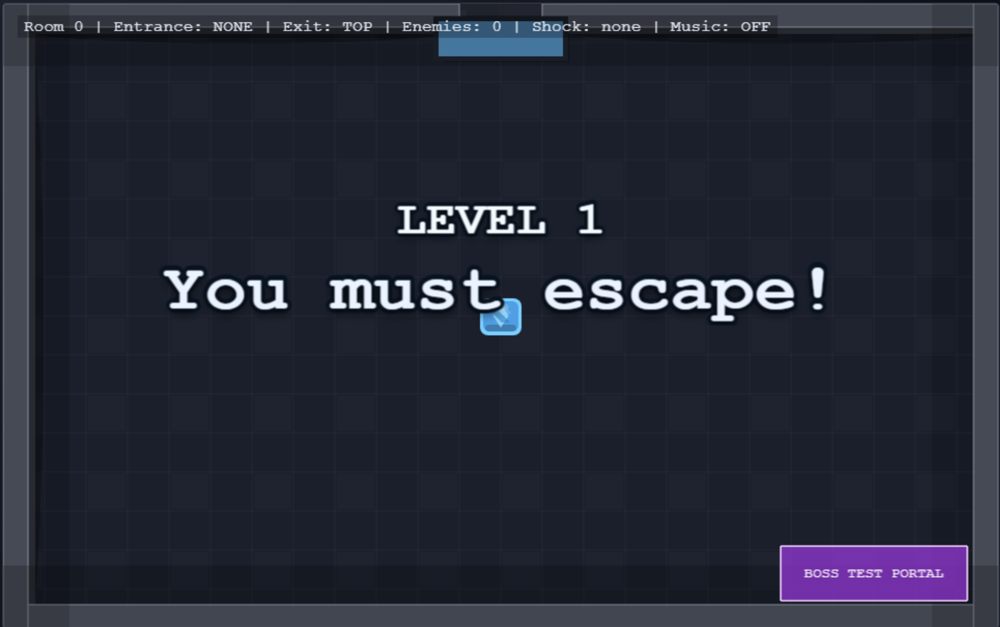
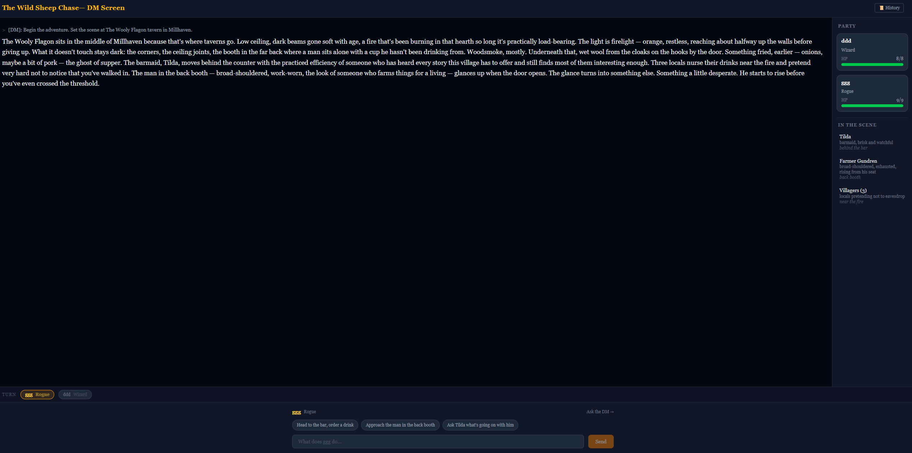
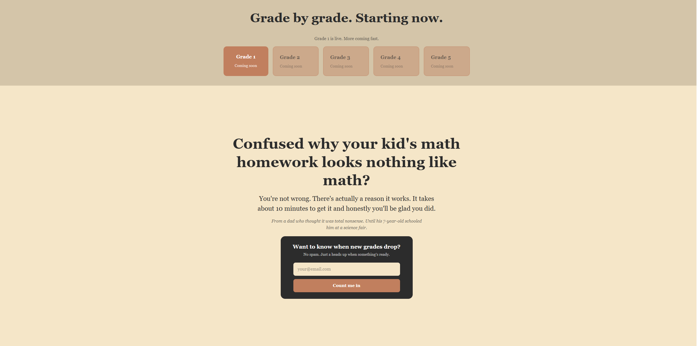

Selected Work
Supporting proof from recent experiments and lightweight product builds.

Interactive Game Prototype
Escape the Cube
A browser-based game built to explore interactive logic, pacing, and user flow.
Shows hands-on front-end problem solving and iterative design thinking.

Simulation Tool
Dungeons and Dragons Simulator
A web experiment focused on game-state logic and structured user interaction.
Shows systems thinking, interface experimentation, and comfort building beyond templates.

Concept Landing Page
Common Core for Old Brains
A playful concept project built around tone, accessibility, and lightweight engagement.
Shows creativity, product instincts, and rapid experimentation.